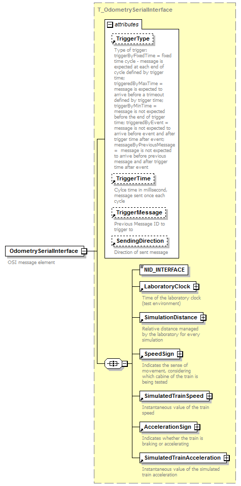

| diagram |
 |
| type |
T_OdometrySerialInterface |
| properties |
|
| children |
NID_INTERFACE LaboratoryClock SimulationDistance SpeedSign SimulatedTrainSpeed AccelerationSign SimulatedTrainAcceleration |
| used by |
|
| attributes |
| Name | Type | Use | Default | Fixed | annotation | | TriggerType | T_TriggerType | optional | triggeredByFixedTime | | | documentation | Type of trigger: triggerByFixedTime = fixed time cycle - message is expected at each end of cycle defined by trigger time;
triggeredByMaxTime = message is expected to arrive before a trimeout defined by trigger time; triggerByMinTime = message is not expected before the end of trigger time; triggeredByEvent = message is not expected to arrive before event and after trigger time after event; messageByPreviousMessage = message is not expected to arrive before previous message and after trigger time after event |
| | TriggerTime | T_TriggerTime | optional | 100000 | | | documentation | | Cylce time in millisecond, message sent once each cycle |
| | TriggerMessage | T_TriggerMessage | optional | 0 | | | documentation | | Previous Message ID to trigger to |
| | SendingDirection | T_SendingDirection | optional | | interfaceToEvc | | documentation | | Direction of sent message |
|
|
| annotation |
| documentation | | OSI message element |
|
| source |
<xs:element name="OdometrySerialInterface" type="T_OdometrySerialInterface">
<xs:annotation>
<xs:documentation>OSI message element</xs:documentation>
</xs:annotation>
</xs:element> |